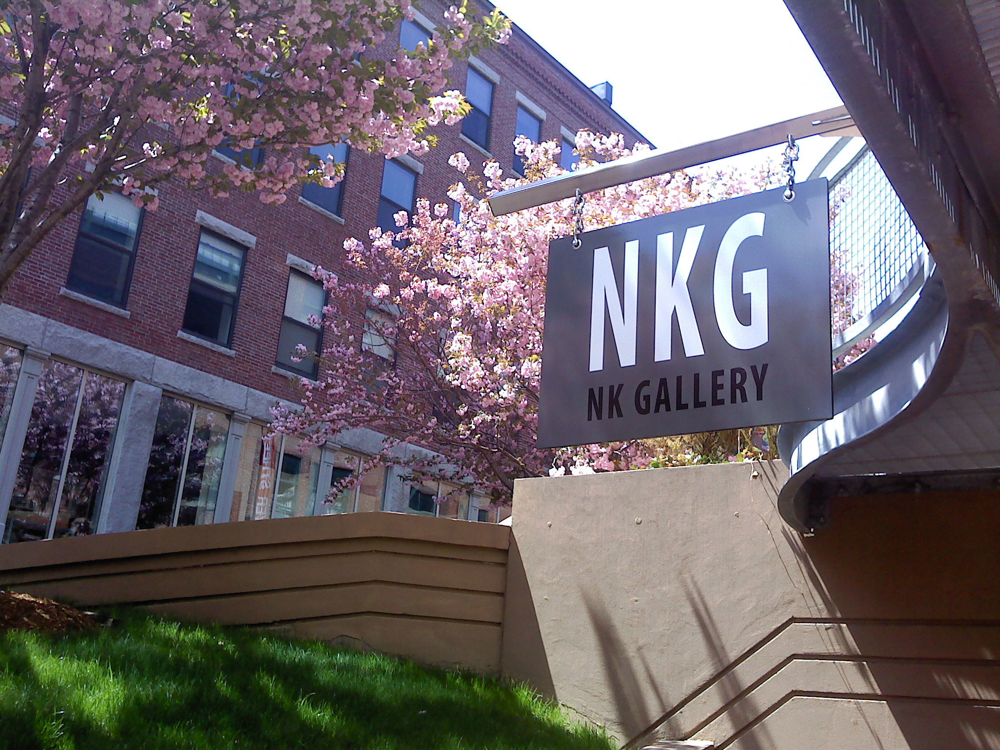

About Us
About NKGallery
NKG created and presented exhibitions that mirrored the diversity of the world and aimed at giving voice to the pluralism that continually enriches contemporary art and ideas, Our artists embodied a broad spectrum of ideas, approaches, and materials that keeps art dynamic and alive. We value the interdisciplinary spectrum that exists in video, painting, drawing, printmaking, photography, performance, film, sculpture, and sound. It was our mission to further contemporary art by giving equal value to the mind and the hand, therefore not separating the mind from the body.
NKGallery was established in 2010. Kathy Halamka and Natacha Sochat formed NKG as a venue for the very best contemporary art. We wanted to create a gallery with artists need to exhibit their work as our foremost goal. Our ultimate goal was to free artists from the domination of the fickle art world market and empower artists rather than keep them confined to the sidelines. We were located in the vibrant SOWA (South Of Washington Street) art district of Boston, initially in the 460 building but later moving to 450 Harrison Avenue #61.
NKG featured works that embodied the diversity, wonder and resonance that exists in art. Thanks to those that visited us and that participated in the wonderful live conversation that resides in 21st Century Boston. Thanks to all the artists that understood what we were trying to do and supported our idealism.

NK Contemporary Art is now featured on Facebook. Please Visit Us »

Events. Come and experience the Southend Open Market. Read More »
